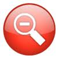
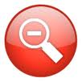

Introduction
Bon Jovi was founded in 1983 from Sayreville, New Jersey. They are an American rock band, who consists of lead singer (Jon Bon Jovi real name John Francis Bongiovi, Jr.), lead guitarist (Richie Sambora); bassists have been Alec John Such but now Hugh McDonald, keyboardist David Bryan and Drummer Tico Torres. They have released 12 Studio albums, 3 compilations and 2 live albums. In 1986, Bon Jovi achieved widespread global recognition with their third album, Slippery When Wet. The band's fourth album, New Jersey was equally successful in 1988, and between 1986—1995, Bon Jovi had 13 U.S. Top 40 hits, including four number-one songs on the Billboard Hot 100: "You Give Love a Bad Name", "Livin' on a Prayer", "Bad Medicine", and "I'll Be There for You”. Other Top 10 record chart hits included "Wanted Dead or Alive", "Born to Be My Baby", "Lay Your Hands on Me", "Bed of Roses" and "Always".
The success of Bon Jovi's 2000 single, "It’s My Life", helped introduce them to a younger audience, as has the use of different styles in their music, such as the appearance of country in 2007's Lost Highway. Lost Highway debuted at number one on the Billboard 2007, as did 2009's The Circle. On March 12, 2013, Bon Jovi released their 12th studio album, What About Now.
They are one of the world’s best-selling bands of all time, having sold more than 130 million records worldwide, and performed more than 2,700 concerts in over 50 countries for more than 34 million fans. In June 2009, Jon Bon Jovi and Richie Sambora were inducted into Songwriters Hall of Fame. That month they also recorded a cover of the song "Stand By Me" with Iranian singer Andy Madadian, to show solidarity for those affected by political unrest in Iran. Parts of the song were sung in Persian
Touring
Their First Ever Show at Maddison Square Garden, New York in 1983. Songs Runaway, Breakout and Get Ready grew in Popularity with the fans during the tour. This tour started September 24th 1983 and finnished November 5th 1984. 14 countries were involved. From US to France.
This started April 28th 1985 and finnished DEcember 31st 1985. This was the tour which give them a great experience for them as they made the headlines around Asia (especially Japan)and Europe. This tour also include their first experience at Monsters Of Rock festival. Jon became famous for his voice and the high pitched screams during the tour and also he won Kerrang Sex Object of the Year 1985.
Slippery when wet Tour
This was the third tour from the American hard rock band that ran from July 14th 1986 through to October 17th 1987. In total 206 shows – 24 in Europe, 149 in North America, 20 in Asia and 13 in Oceania.
This was the tour which gave them their first major worldwide tour, visiting places such as Australia for the first time An average of 16 to 18 songs were played in each show.
New Jersey Syndicate Tour
The New Jersey Syndicate tour was the fourth concert tour by Bon Jovi and this ran for over 3 years (October 30th 1988 – December 21st 1991).
This was massive and highly successful world tour for the band. This was a good support for the multi-platinum 1988 album New Jersey.
However it was so long that the band came to the decision to have their first sabbatical. It also put pressures in the band's relationships with each other and their families.
Often the songs would also run longer than the album track. There were 232 shows in total in this tour.
Keep the Faith Tour
The Keep the Faith Tour was the fifth concert tour which ran in the first half of 1993. However the concert tour was extended but with it a change name to the I'll Sleep When I'm Dead tour at the end of June 1993.
A typical set list held approximately 18 songs.
I'll Sleep When I'm Dead Tour
The I'll Sleep When I'm Dead Tour was the extension tour and this was the tour which was for countries such as Argentina that weren't visited during the Keep the Faith tour.
The first leg in North America was supported by hard rock band Extreme from Massachusetts.
The European leg of the tour had an arrangement of support acts. These acts were Little Angels,
Billy Idol and Manic Street Preachers.
Crossroad Promo Tour
This wasn't a proper tour as most concerts had only 3-7 song set list. It was eventually called These days Tour.
Some set lists have songs from the These Days album but they were only sneak previews of their upcoming album and tour.
At this time Alec John Such departed Bon Jovi and Hugh McDonald
was making his first appearance with Bon Jovi on this tour.
These Days Tour
These Days Tour was the band's seventh concert tour during 1995-96. Van Halen
opened for Bon Jovi on twenty of the European dates during the second leg promoting their album Balance.
On this tour the band played in the DVD Live from London
at one of the three Wembley gigs. The band played 126 shows in 35 different countries all across the world.
Crush Tour
4 years since These Days Tour ended, The Crush Tour was the band's first tour together since then. The band played to 1.1 million fans in 40 arena and stadium venues across
North America, Europe and
Japan. The tour was made famous as Bon Jovi’s was the last rock band to play at the old
Wembley Stadium, with two sold out concerts at that venue.
The band released a DVD entitled The Crush Tour which was filmed at
Letzigrund Stadion, Zurich, Switzerland
on August 30, 2000 in front of 55,000 people. Due to the overwhelming response of this tour it was extended into 2001 with the renamed One Wild Night Tour.

One Wild Night Tour
This tour was a follow up to the bands overwhelming success of their 2000 Crush Tour. The tour was renamed to the One Wild Night Tour after the band released their collection of live songs on an album entitled
One Wild Night Live 1985–2001 in 2001.

Bounce Tour
Bounce tour was the next worldwide tour concert on the list. The set lists greatly varied between concerts, so after each show its set list was posted on the official website.
Most concerts began with the song "Bounce" from the album Bounce followed by "You Give Love a Bad Name". "Raise Your Hands" was almost always played as the finale before any encores.
The final concert of the tour at New Jersey's Giants Stadium. The band was known to play extremely long set lists, some of them running nearly three hours, totalling approximately 25 songs,
including encores that sometimes had as much as four songs.

Have a Nice Day Tour
It took place between November 2005 and July 2006. The tour supported their ninth studio album Have a Nice Day. The tour was a significant commercial success, as the group played to 2,000,000 fans,
and the tour grossed a total $132 million. The tour was the third-highest-grossing tour of 2006, just behind The Rolling Stones'
A Bigger Bang World Tour and Madonna's
Confessions Tour.
The set lists greatly varied between concerts, so after each show its set list was posted on the official website.
Most concerts began with the song "Last Man Standing" from the Have a Nice Day record, with the show beginning as
Jon Bon Jovi suddenly appeared on a small platform in the middle of the audience at the far end from the stage,
followed by "You Give Love a Bad Name". "
Livin' on a Prayer" was almost always played as the finalé before any encores.
At some shows, Jennifer Nettles performed with the band in the song "
Who Says You Can't Go Home". On one show in the
National Bowl at Milton Keynes,
1500 fans sat in the bar watching England play and win their first-round match in the
2006 FIFA World Cup;
Jon Bon Jovi performed the encore in a red England 'away' top. At the concert in
Düsseldorf, Germany, the band played their longest song, "
Dry County", for the first time in over ten years.
The final concert of the tour at New Jersey's Giants Stadium was the only concert at which the band played the Have a Nice Day song "I Am", so that they would fulfill their commitment of playing every song from the album on the tour. At several of the band's summer stadium shows, the band was known to play extremely long setlists, some of them running nearly three hours, totaling approximately 25 songs, including encores that sometimes had as much as seven songs.
Lost Highway Tour
The Lost Highway Tour was a worldwide concert tour by
American rock band
Bon Jovi, that took place from October 2007 to July 2008 in support of their 10th studio album
Lost Highway. Originally planned as a 2008 greatest hits tour, the tour was changed to promote
Lost Highway after the album's unprecedented worldwide success, reaching #1 in several countries in June 2007.
Immediately after the album's release, the band performed a string of promotional summer concerts in the United States,
Canada, Puerto Rico,
United Kingdom and Japan.
The tour began proper in October 2007 with ten concerts that would mark the opening of New Jersey's Prudential Center,
before doing a tour of Canada and then tours of Japan, Australasia, the United States and Europe in 2008.Bon Jovi also played their first concert in
New Zealand in 12 years as part of the tour.
The Lost Highway Tour is a finalist for the Billboard 2008 Touring Awards for Top Tour, Top Draw, and Top Manager.
The Circle Tour
The Circle Tour was a worldwide concert tour by American
rock band Bon Jovi.
The tour was supporting the band's 11th studio album The Circle. Starting in North America in early 2010, the tour progressed to Europe, South America, Asia and Australia before the years end.
It included a historic 12 night run at the O2 Arena in London and four nights in East Rutherford,
New Jersey to celebrate the grand opening of the Meadowlands Stadium.
The tour was the #1 top grossing concert tour for 2010 in the United States.
Bon Jovi also played a special free performance for fans and former season ticket holders of the Jon Bon Jovi-owned arena football team The
Philadelphia Soul on Wednesday, March 24 at 5pm a few hours before the band's show at Philadelphia's Wachovia Center.
The band will end the first year of the tour in Australasia, currently scheduled to play two shows in New Zealand and eight shows in Australia
including a VIP-ONLY gig on December 15 at Star City Casino.
Bon Jovi Live
Bon Jovi Live was the fourteenth concert tour by American band, Jovi. Visiting several countries in
North America and
Europe, the tour will support the band's sixth compilation album,
The Greatest Hits.
It follows The Circle Tour, which became the biggest tour of 2010.At the conclusion of 2011, the tour placed second on Billboard's annual, "Top 25 Tour", earning over $190 million with 68 shows
.
In October 2010, Bon Jovi released the concert film, "The Circle Tour: Live from Jersey" in U.S. theaters.
At the same time, the band announced the release of their latest greatest hits collection and their upcoming tour. Upon the release of the album, the new tour dates were announced as well. While touring Australia,
it was announced that the "Circle Tour" became the biggest tour of 2010, grossing over $200 million.
The band will continue to tour in 2011. Commenting on the tour, Jon Bon Jovi stated,
Because We Can Tour
Because We Can is the 15th tour by Bon Jovi. The tour is in support of the band's twelfth studio album
What About Now.
The tour is named after the lead single from What About Now.
All five major continents will be visited during the 2013 tour. The tour will see the band travel to
Wales for the first time since their 2001 One Wild Night Tour
and it will also be the first time in since their 1995
These Days Tour that the band will be returning to the shores of
Africa for two dates in South Africa.
Furthermore, this tour will be the first time in the band's 30 year history that they will be visiting
Bulgaria and Poland.
The tour ranked 1st on Pollstar's annual "Top 100 Mid Year Worldwide Tours".
It earned $142.1 million from 60 shows. 4 December 2013 at Tokyo Dome show is their 100th show in Japan. It also earned them an nomination for the best world tour 2013.
It started February 10th 2013 and ended December 17th 2013.